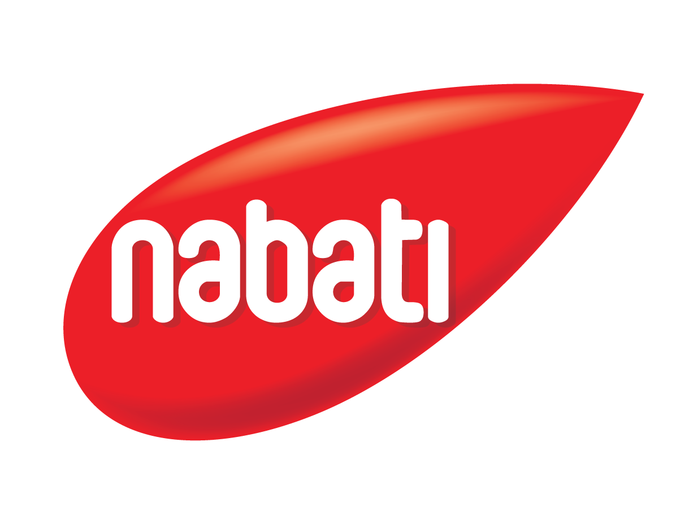

Sales harian
Net sales berdasarkan Posting Date

NABATI MALAYSIA / SALES INTELLIGENCE
Net sales berdasarkan Posting Date
Revenue · seluruh branch dalam filter
Revenue · seluruh kategori distributor digabung
Klik baris untuk melihat level berikutnya.
Revenue positif · sesuai seluruh filter dan level aktif
Nilai Sales negatif · sesuai seluruh filter dan level aktif
TASKFORCE DASHBOARD
Upload workbook Warehouse & Lorry. Modul aktif membaca sheet WAREHOUSE.